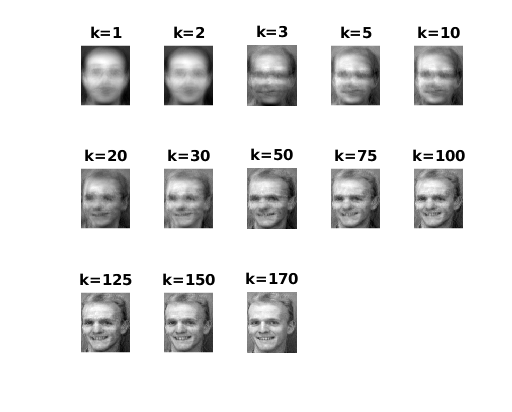
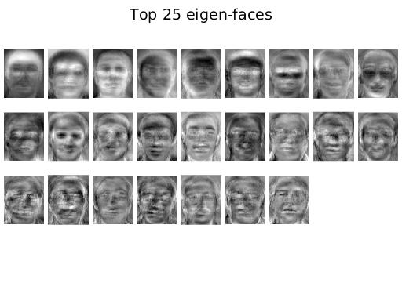
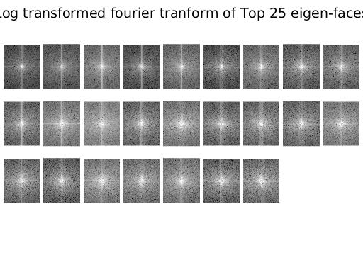

Contents
MyMainScript
tic;
The value of k
karr = [1, 2, 3, 5, 10, 20, 30, 50, 75, 100, 125, 150, 170];
Fetching the images and reshaping them
root = uigetdir;
disp(root);
X = [];
r = 0;
c = 0;
N = 35*5;
for i=1:35
personDir = strcat(root,'/s',num2str(i));
for j=1:5
imgpath = strcat(personDir, '/', num2str(j), '.pgm');
img = imread(imgpath);
[r, c] = size(img);
img = reshape(img', r*c, 1);
X = [X img];
end;
end;
/home/nishant/Acads/Sem7/DIP/assignments/att_faces
Computing the mean and subtracting it from each point
m = mean(X, 2);
A = bsxfun(@minus, double(X), m(:,1));
Computation of co-variance matrix
L = A'*A;
[W,D] = eigs(L, N);
Warning: For real symmetric problems, must have number of eigenvalues k < n.
Using eig instead.
Obtaining eigenvectors of C from those of L
V = A*W;
Unit-normalizing V
V = normc(V);
Picking eigenvectors corresponding to top k eigenvalues
top25 = V(:,1:25);
figure;
for i=1:25
eig_face = reshape(top25(:,i)', c, r);
eig_face = eig_face';
subplot_tight(4, 9, i);
imshow(eig_face, [min(min(eig_face)), max(max(eig_face))]), axis('off');
end;
suptitle('Top 25 eigen-faces');
figure;
for i=1:25
eig_face = reshape(top25(:,i)', c, r);
eig_face = eig_face';
subplot_tight(4, 9, i);
ft_eig_face = fft2(eig_face);
ft_eig_face = fftshift(ft_eig_face);
log_trans = 1 + log(abs(ft_eig_face));
imshow(log_trans, [min(min(log_trans)), max(max(log_trans))]), axis('off');
end;
suptitle('Log transformed fourier tranform of Top 25 eigen-faces');
disp(size(karr));
rates = zeros(size(karr));
figure;
for kind=1:size(karr,2)
k = karr(kind);
EV = V(:,1:k);
Projecting each point onto the eigenspace
projected = EV'*A;
tot = 35;
recognized = 0;
total = tot*5;
Pick person 5, index = 5*4 + 4 = 24
recnst_ind = 24;
xi = projected(:,recnst_ind);
recnst_img = EV*xi + m;
recnst_img = reshape(recnst_img', c, r);
recnst_img = recnst_img';
subplot(3, 5, kind), imshow(recnst_img, [min(min(recnst_img)), max(max(recnst_img))]), title(strcat('k= ', num2str(k)));



end;
toc;
1 13
Elapsed time is 22.594012 seconds.